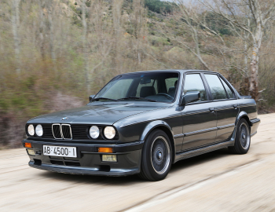
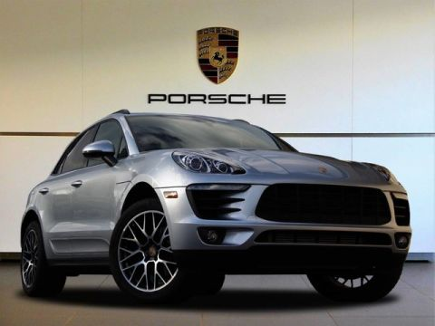

|
 more images |
BMW X5 — среднеразмерный кроссовер от немецкого автопроизводителя BMW. Автомобиль был представлен в 1999 году на автосалоне в Детройте. Буква «Х» означает, что автомобиль имеет полный привод, а цифра «5» — что базой послужила 5-я серия (BMW E39), однако X5 короче E39, но при этом выше и шире. Кузов Е53 напоминает BMW E46 Touring. Машина приспособлена для езды по всем типам дорожного покрытия, этим она обязана большому клиренсу и постоянному приводу на все колёса.BMW Х5 E53 был разработан в то время, когда BMW Group уже принадлежал бренд Land Rover и как таковой он имеет много общих компонентов и конструкцию с Range Rover L322, в частности систему Hill Descent и Off Road, а также двигатель и электронные системы от BMW E39. В отличие от Range Rover, первый X5 был разработан в качестве спортивного автомобиля, и его внедорожные возможности значительно меньше чем у Land Rover. |
|---|
|
 more images |
Porsche - (немецкое произношение [ˈpɔʁʃə][2]; полное наименование Dr. Ing. h. c. F. Porsche Aktiengesellschaft) — немецкий производитель автомобилей, основанный известным конструктором Фердинандом Порше (нем. Ferdinand Porsche) в 1931 году[⇨]. Штаб-квартира и основной завод находится в Штутгарте, Германия. Основным акционером компании является род Порше[источник не указан 194 дня]. Porsche является самой высокодоходной автомобильной компанией в мире (в пересчёте на прибыль от каждой проданной машины)[источник не указан 194 дня]. В 2010 году автомобили Porsche были признаны самыми надёжными в мире[3]. В России подразделение Porsche возглавляет доктор Томас Штэрцель |
|---|